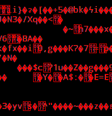

WelcomE!
The figure to the right is me.Yes, yes it is. It may look a little dark and hard to see, but that figure to the right of this paragraph of text is indeed me. Where was I when this picture was taken? The thing is, I don't remember. It's anyone's guess, but I refuse to guess myself, because honestly, I of all people should know for sure where I was when this picture was taken - I was there, after all - yet I do not actually know. What I conclude from this is that I do have the ability to figure out exactly where I was when this picture was taken, without the need to guess. However, as that requires effort, I have elected not to do so. Which is always a nice choice in most cases. Most of the time. Anyway,Welcome all, welcome to my homepage! Here, you will find a couple of things, which might be of interest to you, though most likely they'll be boring. They're mostly content dug out from other things I've done, after all. |
Attractions
Ethics | |
|
First, a little background: So, it turned out that ethics was, like, really important for Computer Science, and we all have to think about it a little. Well, if 1500 words count as little, then this page is the result of me applying a little thought to the subject of ethics, and I have chosen the topic of Justice-based ethics because... um... Actually, I didn't really choose it. It was simply the one left over, which I picked, since I didn't really have any particular preference for any one ethical framework, nor do I care about them particularly much. So, here is the essay. In full, converted from the original Latex to html. Attempt to enjoy. Don't force yourself. |
|
Game | |
|
This little rhythm game would be my answer to "What was your first web project?". Made in collaboration with three other people, this rhythm game was created over a two-week period of a javascript/svg course. While it was by no means my first programming project, nor the first game I have ever programmed, this game was my first time programming in a real-ish programming language, and the first time I've ever worked with svg graphics. For a little two-week project, I'd say it is not bad - it even loads its timing values from a csv file, which means I can swap out the song if I need or want to. |
|
Experiments | |
|
Did you know that this page is the first HTML project I've ever worked on? Now you know! Because I needed to find my way around this HTML stuff, I needed a starting point, a way to test the tools at my arsenal, to roughly gauge what I can do with it. And that was the result: a mass of unrelated content, strange animations, and self-referencing paragraphs. It was styled slightly differently from the rest of the pages, with larger margins on the left and right sides, but then I decided that smaller margins looked better, so now it has small margins again.. |
 |